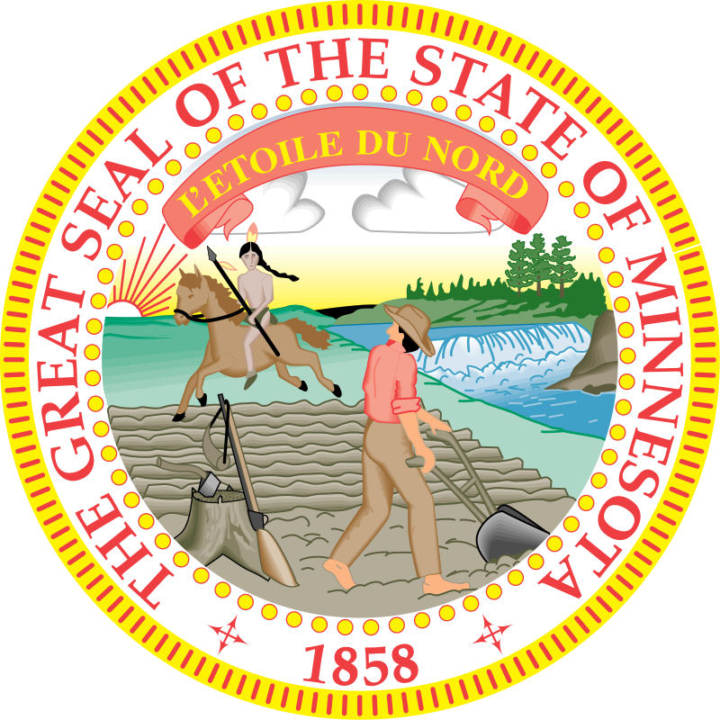

Minnesota – AQShning shimoliy qismidagi shtat. Maydoni 218,6 ming km². Aholisi 5,01 mln. kishi (2002). Maʼmuriy markazi — Sent-Pol shahri Buyuk koʻllardan gʻarbda joylashgan. Yer yuzasi oʻrqirli tekislik. Iqlimi moʻʼtadil kontinental iqlim. Yanvarning oʻrtacha temperaturasi 10—15°, iyulniki 17—22°. Yillik yogʻin 700 mm gacha. Asosiy daryosi — Missisipi. Shim.-sharqida igna bargli oʻrmonlar saqlangan; 10 mingdan ortiq koʻl bor. Temir rudasi (mamlakatda olinadigan rudaning 60%) qazib olinadi. Yetakchi sanoat tarmoqlari: qora metallurgiya, mashinasozlik (jumladan, vagonsozlik va kemasozlik). Harbiy, koʻnteri, oziq-ovqat sanoati korxonalari bor. Asosiy sanoat markazlari — Sent-Pol, Minneapolis, Dulut-Syupirior. Qishloq xoʻjaligida chorvachilik (sut-goʻsht chorvachiligi) rivojlangan. Shtat sariyogʻ, quruq sut, pishloq ishlab chiqarish, kurka goʻshti yetishtirish boʻyicha mamlakatda yetakchi oʻrinni egallaydi. Bugʻdoy, makka-joʻxori, lavlagi, dukkakliklar, zigʻir ekiladi. Koʻllar va Missisipi da-ryosida kema qatnaydi. Porti — Dulut-Syupirior.[1] Minnesota - Amerika Qoʻshma Shtatlardan biri. Poytaxti - Saint Paul shahri. AQSh ittifogʻiga 11-may 1858-yilda kirgan, undan oldin - Minnesota Territory. 